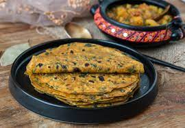

FOODS
Khandvi (Gujarati: ખાંડવી khāṇḍvī), also known as Patuli, Dahivadi or Suralichi Vadi (Marathi: सुरळीची वडी), is a savory snack in Maharashtrian cuisine[2] as well as in Gujarati cuisine of India.[3] It consists of yellowish, tightly rolled bite-sized pieces and is primarily made of gram flour and yogurt. Khandvi is readily available across India and is commonly eaten as an appetizer or snack. Many people choose to buy it from local shops rather than preparing it at home. It is sometimes served with garlic chutney.

Khaman
Dhokla is a savoury sponge dish that is native to the Indian state of Gujarat and parts of adjacent states,[1] and is popular throughout the country. It is made with a fermented batter that is steamed to a cake-like consistency. The batter consists of a mixture of rice with the pulse Bengal gram,[2] but has several variants with the gram replaced by chickpeas, pigeon peas, or urad beans.

Thepla
Chapati dough is made with whole white flour (finer), oil/ghee seasoned with salt by binding flour mostly with water. Chapatis are an everyday food, cooked on a griddle usually without an oil or ghee and often puffed up by cooking on open flame after taking it off the flame, some ghee is spread on the top. Thepla is often multigrain, usually made with whole wheat flour with the addition of chickpea and millet flour. When made for travel, the flour for theplas is bound into a stiff dough using milk instead of water, and with extra ghee/oil. This is done in order to increase their shelf life..